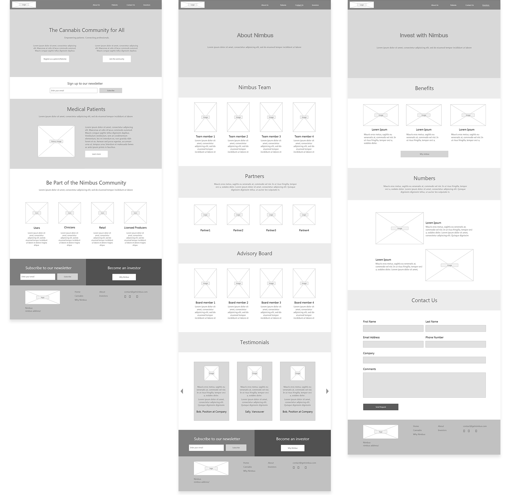
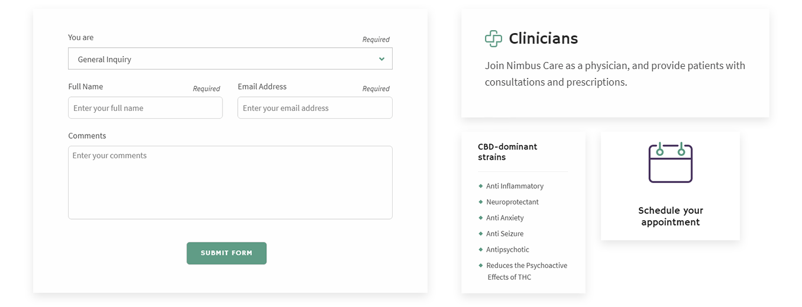
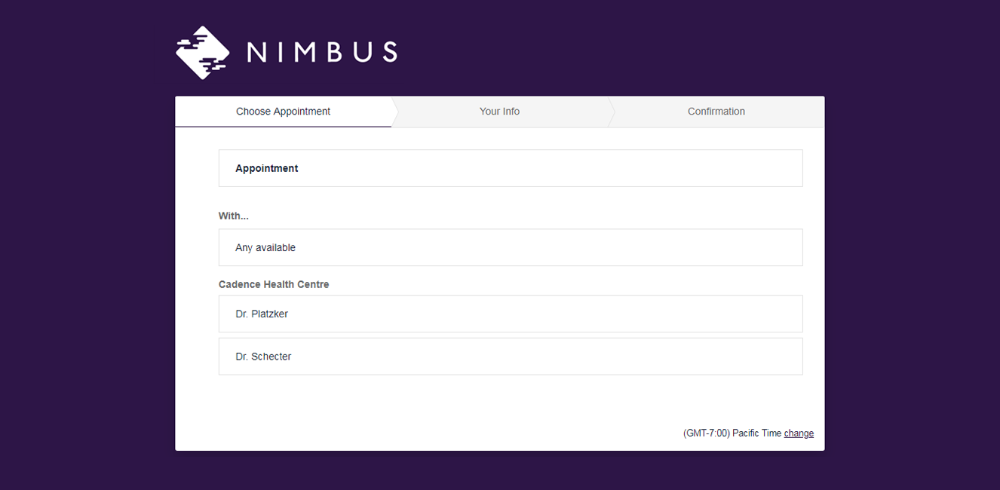

Timeline
3 months
Nimbus is an emerging cannabis consulting services company that changes the way people learn about and order medicinal and recreational cannabis. As a new player in cannabis sector, the challenge was to design a brand that appeals to health care professionals, retailers, and cannabis users while providing education on the benefits of cannabis.
As a digital design intern, I was tasked with designing the look and feel of Nimbus website. My main contributions include developing sitemap, creating brand guidelines, defining user flow, wireframing page layouts, and converting wireframes into high-fidelity mockups. This work is one of the client projects completed during my internship at BSTRO.
After gathering project requirements and doing preliminary market research, we collaborated with the client in a half-day workshop on defining the brand. The ultimate output of the meeting was a brand guidelines document, which summarizes the company's goals, values, voice, and tone. This provided the business with a strong foundation in knowing how to present itself to the customers. Furthermore, we addressed three types of primary goals: usability, business, and branding.
Goals for website design:
Based on the goals of the website, we determined two types of users and their primary use of website. This helped us to prioritize pages to design and discard pages that don't meet customer's needs and goals.
Once the brand was established, we started working on content planning by creating a sitemap using XMind to visually organize the content and determine whether discussed navigation paths between different pages made sense. We then grouped the large amount of content into meaningful sections and subsections.
The first version of the website was aimed to be a straightforward introduction to the company and the services it provides. The business goal was to get potential customers confident enough about the service to make an appointment through a third-party scheduling platform. Thus, we designed a single-page landing experience that leads to the intended call-to-action.
To organize information in an easily digestible way, we decided to use cards and lists design. Card allows flexibility for different types of information and can be quickly applied to many pages on Nimbus website.
We opted for single navigation by grouping content more effectively. The gradation under the navigation was intended to mimic the concept of cloudy sky and strengthen the brand identity.
To entice potential customers, we designed a simple landing page with lots of negative space and placed call-to-action (CTA) buttons above the fold to provide easy entry points to the services offered. We also used bold colors from the existing brand guidelines for the CTA buttons to make them stand out from other elements on the page.
 Staying true to the Nimbus brand, we utilized Nimbus brand imagery, fonts, colours, and styling to pages such as this landing page.
Staying true to the Nimbus brand, we utilized Nimbus brand imagery, fonts, colours, and styling to pages such as this landing page.
We implemented a third-party scheduling system from Acuity to allow customers to easily schedule an appointment with health care professionals. We opted for this scheduling system due to its ease of use, seamless integration with Google Calendar, and flexible intake form customization.
After completing my internship at BSTRO, I gained a new perspective about the business side of agency and learned the importance of being agile and working efficiently within a given budget and timeframe. I was involved in the whole design process from putting together initial ideas and mood boards to the finished product allowing me to get a more holistic understanding of the product design process.